პერსონაჟები
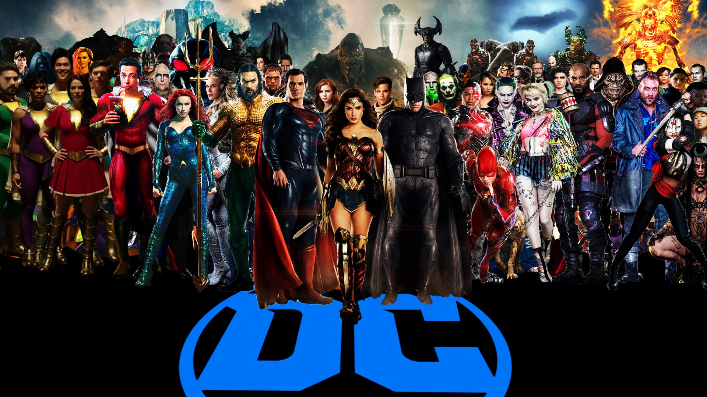სუპერმენი

სუპერმენი (Superman) არის DC Comics-ის სუპერგმირი, რომელიც ერთ-ერთი ყველაზე ცნობილია და მიჩნეულია სუპერგმირების ჟანრის მამად. მისი შექმნა შედგა ჯერი სიგელის და ჯო შუსტერის მიერ, და პირველად გამოჩნდა 1938 წელს „Action Comics“ #1-ში. სუპერმენი დაიბადა კრიპტონის პლანეტაზე, რომელიც განადგურდა. მის მშობლებს, ჯორ-ელს და ლარასს, მოესწრო წასვლა დედამიწაზე პატარა კალ-ელის გადასარჩენად. იგი გაიზარდა დედამიწაზე როგორც კლარკ კენტი, პატარა ქალაქ ლოუზ ველის მცხოვრები. კლარკი მალავს თავის სუპერ ძალებს, მაგრამ როდესაც საჭიროა, ის ხდება სუპერმენი და ეხმარება სხვებს. სუპერმენი არის სიმბოლო სიწმინდისა, სიმართლისა და ხალხის დაცვის. მისი ამბები ხშირად ეხება თემებს, როგორიცაა პასუხისმგებლობა, სიყვარული, სამართლიანობა და ადამიანები შორის განსხვავებები. ის მიზნად ისახავს იყოს მაგალითი და გმირი, ვინც სხვებს დაეხმარება. სუპერმენი მრავალი წლის განმავლობაში გახდა პოპულარული კულტურის ნაწილი, და მისი ისტორიები მრავალი ფილმის, სატელევიზიო შოუებისა და ანიმაციური სერიების საფუძვლად იქცა. აღსანიშნავია ფილმები, როგორიცაა „Superman: The Movie“ (1978) და „Man of Steel“ (2013), ასევე სატელევიზიო შოუები, როგორიცაა „Lois & Clark: The New Adventures of Superman“ და „Smallville“.
ბეტმენი
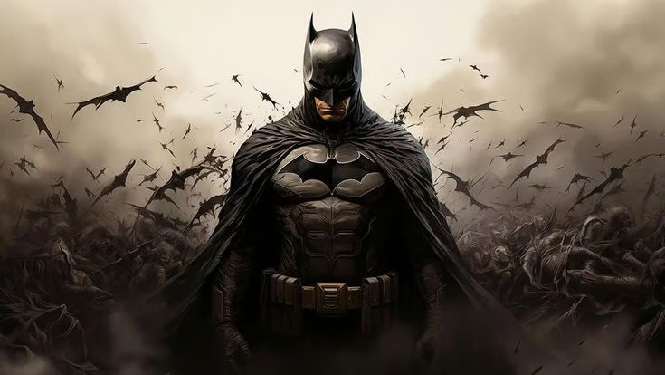ბეტმენი (Batman) არის DC Comics-ის ერთ-ერთი ყველაზე ცნობილი და ICONIC პერსონაჟი, რომელიც შეიქმნა 1939 წელს. მისი ნამდვილად ღრმა ისტორია და მრავალმხრივი პერსონაჟი მას ერთ-ერთ ყველაზე პოპულარულ სუპერგმირად აქცევს. ბრუს უეინი (Bruce Wayne). ბეტმენი პირველად გამოჩნდა "Detective Comics" 27-ში, რომელიც გამოქვეყნდა 1939 წლის მარტში. პერსონაჟი შეიქმნა ბობ კეინის(Bob Kane) და ბილი ფინგერს (Bill Finger). პარამეტრები ბეტმენი წარმოადგენენ იურიდიულობას, სამართლის დაცვას და ხალხის უსაფრთხოების დაცვას. მისი მოქმედებები ხდება Gotham City-ში, სადაც მან იცავს ქალაქის მოსახლეობას კრიმინალებისგან. ბეტმენი არა მხოლოდ სუპერ გმირი, არამედ გასული სამძიმარი, რომელიც უბრძოლებს ბოროტმოქმედებს, ძირითადად ჯოკერის, პენგვინის და მასთან სხვა კლასიკურ მტერთა წინააღმდეგ. უნარები ბეტმენი არა აქვს სუპერძალა, მაგრამ მას აქვს განსაკუთრებული საბრძოლო ხელოვნების უნარები, დიდი ინტელექტი, ტექნოლოგიური ცოდნა და სიძლიერე. ის იყენებს სხვადასხვა ტექნოლოგიურ მოწყობილობებს, მათ შორის ბატმობილს, ბატარეას და სხვადასხვა ტიპის ხელსაწყოებს. მულტიმედია ბეტმენი გამოჩნდა მრავალ ფილმში, როგორიცაა "Batman" (1989), "The Dark Knight" (2008) და "Batman v Superman: Dawn of Justice" (2016). პერსონაჟი ასევე დიდ პოპულარობას მოიპოვა ტელესერიებში, როგორიცაა "Batman: The Animated Series" და "Gotham". კომიქსები: ბეტმენი ხშირად მთავარი პერსონაჟია მრავალი კომიქსის სერიაში, მათ შორის "Batman", "Detective Comics" და "Batman: The Long Halloween". ბეტმენი არა მხოლოდ კომიქსების სამყაროს, არამედ pop culture-ის სიმბოლო გახდა. ის არის ძლიერი მაგალითი, თუ როგორ შეიძლება ჩვეულებრივი ადამიანი, რომელსაც არ აქვს სუპერ ძალები, ბრძოლოს სიკეთის წინააღმდეგ.
ქალი საოცრება

ქალი საოცრება (Wonder Woman) არის DC Comics-ის სუპერგმირი და ერთ-ერთი ყველაზე ცნობილი და სიმბოლური პერსონაჟი კომიქსების სამყაროში. მისი შექმნა შედგა მაქს ფრიშტეინის, უილიამ მოლტონის მარნსტონის და ჰარი გაპის მიერ. პირველად გამოჩნდა 1941 წელს „All Star Comics“ #8-ში. დიანა, როგორც ამაზონების Princess, გაიზარდა მამაკაცებისგან გამოყოფილ საზოგადოებაში, რომელიც ძალზე ძლიერი და ჭკვიანი ქალებით არის დასახლებული. მისი მშობლები, ჰიპოლიტა და ზევსი, განათლებას აძლევდნენ და მოამზადებდნენ საომარ საქმეში. დიანა, რომელსაც გააჩნია ძალა და უნარები, გადაწყვიტა მიეტოვებინა თემა-სკირია და გამოჩენილიყო მსოფლიში, რათა დახმარებოდა და დაეცვა კაცობრიობა. ქალი საოცრების სიმბოლოა ქალთა ძალისხმევის და თანასწორობის. მისი ამბები ხშირად ეხება თემებს, როგორიცაა სიძლიერე, თავდადება და სამართლიანობა. იგი ასევე გამოსახავს ქალთა უფლებების და უფლებების დაცვის საჭიროებას. ქალი საოცრება გახდა პოპულარული კულტურის მნიშვნელოვანი ნაწილი. 2017 წელს გამოვიდა ფილმი „Wonder Woman“, რომელშიც გალ გადოთმა შეასრულა მთავარი როლი. ამ ფილმმა დიდი წარმატება მოიპოვა და მოწინავე ქალი სუპერგმირის პირველი სოლო ფილმი გახდა. მისი პერსონაჟი ასევე გამოჩნდა სხვა DC Extended Universe ფილმებში, მათ შორის „Batman v Superman: Dawn of Justice“ და „Justice League“. ქალი საოცრება დღესაც აქტუალური და სიძლიერის სიმბოლოა, რომელიც ბევრ ადამიანისთვის არის მაგალითი.
ჯოკერი
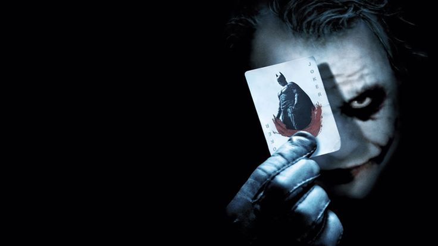ჯოკერი (The Joker) არის DC Comics-ის ერთ-ერთი ყველაზე ცნობილი და Iconic ბოროტმოქმედი, რომელსაც ბეტმენი მის მთავარ მტრად ჰყავს. ის ცნობილია თავისი ქაოტური და ფსიქოპათური ბუნებით, ასევე საშიში, მაგრამ ხუმრობებით გაჯერებული პიროვნულობით. ჯოკერი პირველად გამოჩნდა "Batman" 1 კომიქსში 1940 წელს, რომელიც შემუშავდა ბობ კეინის და ბილი ფინგერს მიერ. მისი წარმომავლობა ხშირად წინააღმდეგობრივი და გაურკვეველია, რაც ქმნის დამატებითი მისტიურობას-ს მის პერსონაჟში. ერთ-ერთი ყველაზე გავრცელებული ვერსია ამბობს, რომ იგი იყო დამნაშავე, რომელსაც შემთხვევით წაიქცა ქიმიურ ნივთიერებაში, რამაც მისი გარეგნობა და პიროვნულობა შეცვალა. ჯოკერი არის საშიში, მაგრამ აუტენტიური ფსიქოპათი, რომელიც სიხარულით ებრძვის წესრიგსა და სამართლებრივი სისტემის წარმომადგენლებს. მისი საქციელი მოიცავს როგორც ქაოტურ ხუმრობას, ისე მრისხანებას. ჯოკერს არ აქვს სუპერ ძალები, მაგრამ იგი ძალიან ჭკვიანი და მანიპულაციური პიროვნებაა. ის ხშირად იყენებს ხუმრობებს და სხვადასხვა ვნებებს, რათა მიაღწიოს მიზნებს. ხშირად იყენებს სხვადასხვა სახის ნივთიერებებს, ასაფეთქებელ ნივთებს და სხვა იარაღებს. ჯოკერი ბეტმენის მთავარი მტერი და ერთ-ერთი ყველაზე ცნობილი სუპერგმირის სავარაუდო ფსიქოლოგიური სარკეა. მათი ურთიერთობა ყოველთვის გამორჩეული და კომპლექსური იყო. ჯოკერი ასევე ცნობილია თავისი ურთიერთობით ჰარლი ქუინისთან, რომელიც თავდაპირველად იყო მისი ერთ-ერთი სექრეტარიც, შემდეგ კი – შეყვარებული და პარტნიორი დანაშაულში. მულტიმედია ჯოკერი გამოჩნდა მრავალ ფილმში, სატელევიზიო სერიალში და ვიდეო თამაშებში: "Batman" (1989), სადაც ჯოკერს ასრულებს ჯეკ ნიკოლსონი; "The Dark Knight" (2008), სადაც მას განასახიერებს ჰიტ ლეჯერი; "Joker" (2019), რომელშიც მთავარ როლშია ხოაკინ ფენიქსი. ჯოკერი არის ერთ-ერთი მთავარი პერსონაჟი მრავალ სატელევიზიო სერიალში, მათ შორის "Batman: The Animated Series". ჯოკერი გახდა სიმბოლო ქაოსისა და წინააღმდეგობის სამართლისა და წესრიგის წინააღმდეგ. ის წარმოაჩენს ბოროტების გაწვდილი ხასიათის და არაორდინალური, ფსიქოლოგიური ინტერესის მაგალითს.
აქუამენი

აქუამენი (Aquaman) არის DC Comics-ის სუპერგმირი, რომელიც ცნობილია როგორც წყლის სამყაროს მცველი და ერთ-ერთი წამყვანი პერსონაჟი DC Extended Universe-ში. მისი შექმნა შედგა ავტორების მორტ შუთის და პოლ ნორის მიერ, და პირველად გამოჩნდა 1941 წელს „More Fun Comics“ #73-ში. არტურ კური არის ნახევრად ადამიანი და ნახევრად ატლანტი, რომელიც ორივე სამყაროში იზრდება. მას აქვს უნიკალური ძალები და უნარები, რაც მას საშუალებას აძლევს, იყოს წყლის სამყაროს ძლიერი მფარველი. მისი თავდასხმის და თავდაცვის უნარები, განსაკუთრებით წყალქვეშა ბრძოლაში, მას აღიქმება როგორც მეფე ატლანტის. აქუამენი არის ისტორიისა და მემკვიდრეობის სიმბოლო, რომელიც ერთმანეთთან ურთიერთობის, მემკვიდრეობის და პასუხისმგებლობის თემებზეა გათვლილი. მისი ამბები ხშირად ეხება მის პიროვნულ ბრძოლას როგორც ადამიანის და ატლანტი მეფეს, რომელიც უნდა აკავშიროს ორივე სამყარო. აქუამენი გახდა პოპულარული კულტურის ნაწილი, განსაკუთრებით 2018 წელს, როდესაც გამოვიდა ფილმი „Aquaman“, რომლის მთავარ როლში Jason Momoa იყო. ფილმი კომერციულად წარმატებული იყო და მისი მემკვიდრეობა პოპულარული გახდა სუპერგმირების სამყაროში. აქუამენი წარმოადგენს წყალქვეშა სამყაროს სიძლიერეს და სიმბოლურად ასახავს გარემოს დაცვის და კომუნიკაციის მნიშვნელობას.
ჰარლი ქვინი
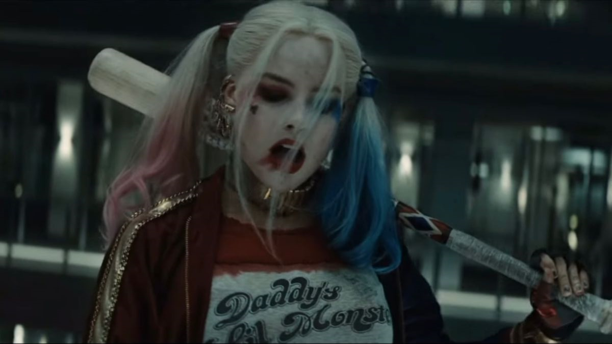ჰარლი ქვინი (Harley Quinn) არის DC Comics-ის ცნობილი პერსონაჟი, რომელიც პირველად გამოჩნდა 1992 წელს "Batman: The Animated Series"-ში. მას შემდეგ იგი გახდა ერთ-ერთი ყველაზე პოპულარული პერსონაჟი, ცნობილი თავისი ქაოტური და მრავალმხრივი ხასიათით. ჰარლინ ქინზელი (Harleen Quinzel). ჰარლი იყო ფსიქოლოგი, რომელიც Arkham Asylum-ში მუშაობდა და იქ გაიცნო ჯოკერი. მისი სიმპათიები ჯოკერის მიმართ გამოიწვია მისმა გაქცევამ და, საბოლოოდ, მის გვერდით გადავიდა ბოროტების სამყაროში. ჰარლი წარმოაჩენს მხიარულ, მაგრამ სახიფათო ხასიათს, რომელსაც სურს ყურადღება და აღიარება. იგი ხშირად განიხილება როგორც ჯოკერის თანამგზავრი, თუმცა აქვს საკუთარი თვითმყოფადობა და დამოუკიდებელი მიზნები. ჰარლი საკმაოდ გაწვრთნილი და ნიჭიერი მებრძოლია, რომელიც იყენებს საბრძოლო ხელოვნებას, ასევე მას აქვს უნიკალური იარაღების გამოყენების გამოცდილება. ჰარლი და ჯოკერი არიან საკმაოდ კომპლექსური და ძალადობრივი ურთიერთობის მაგალითი. მათი ურთიერთობა ხშირად იცვლება და სავსე იყო როგორც სიყვარულის, ასევე მანიპულაციის და ბოროტების ელემენტებით. ჰარლი ხშირად მოქმედებს ბეტმენის წინააღმდეგ, თუმცა მას აქვს გარკვეული ურთიერთობა მასთან, როგორც საკუთარი ცხოვრების გამოწვევებთან. ჰარლი ქუინი გამოჩნდა მრავალი ფილმში, სატელევიზიო სერიალში და კომიქსებში: "Suicide Squad" (2016), სადაც მას ასრულებს მარგო რობი; "Birds of Prey" (2020). "Harley Quinn" ანიმაციური სერია, რომელიც ფოკუსირდება მის თავგადასავლებზე. ჰარლი ქუინი გახდა კულტურული სენსაცია, რაც გამოიხატება მის პოპულარობაში კომიქსების, მულტიმედიის და ფანის კულტურაში. ის ხშირად გამოყენებულია როგორც სიმბოლო დამოუკიდებლობის, ქაოსისა და ქალთა ძალაუფლების.
რეიჩელ როთი(რეივენი)
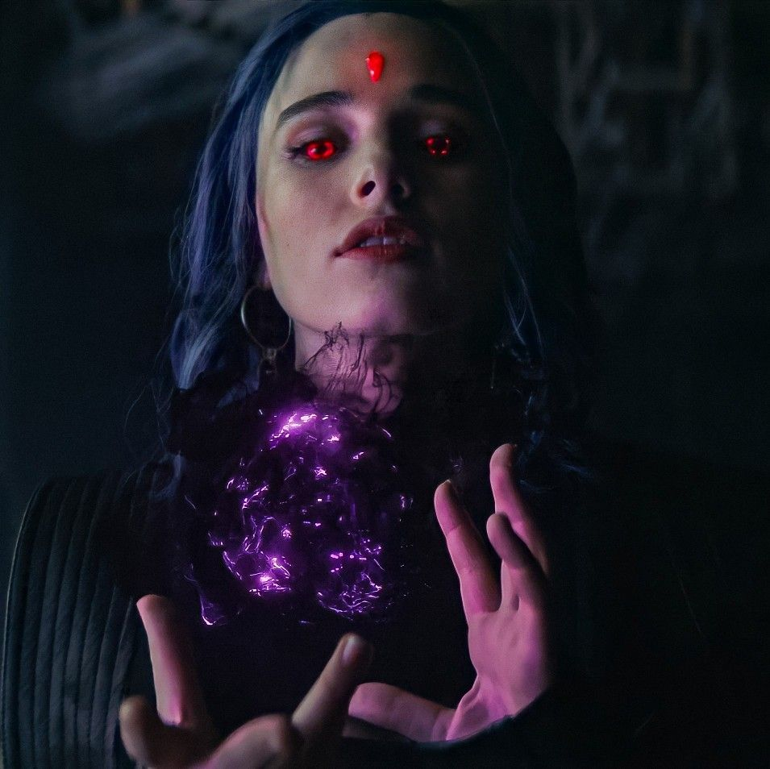რეივენი (Raven) არის DC Comics-ის ერთ-ერთი ყველაზე საინტერესო და ღრმა პერსონაჟი. მისი ისტორია და უნარები გამორჩეულია და იგი მნიშვნელოვან როლს ასრულებს როგორც სუპერგმირი, განსაკუთრებით „Teen Titans“-ში. რეივენი დაიბადა აზარათში, სადაც გაიზარდა, შორს თავისი მამინაცვლის ტრიგონის გავლენისგან. მისი ისტორიები ხშირად ეხება ბრძოლას შიდა დემონებთან, რაც მას სირთულეების წინაშე აყენებს. იგი აცნობიერებს თავის ძალას, მაგრამ ასევე ამ ძალის პოტენციურ საფრთხესაც. ის ებრძვის დემონური მემკვიდრეობის შედეგებს და ხშირად იცავს სხვებს თავისი პიროვნული ტრავმისგან. მისი გზა თვითშეფასებისა და მიღების გარშემო მიმდინარეობს. რეივენი არის ძლიერი მაგი, რომელსაც შეუძლია ჯადოსნური ენერგიის კონტროლი, შეუძლია მოისმინოს და გაუწვდოს აზრები სხვებს, შეუძლია აღძრას და აკონტროლოს სხვების ემოციები, შეუძლია შექმნას პორტალები, რაც მას ადგილების სწრაფად შეცვლის საშუალებას აძლევს, შეუძლია გადაიქცეს შავ ყვავად, რაც მას ფრენის საშუალებას აძლევს. რეივენი გახდა ქალთა უფლებების და ემოციური სიძლიერის სიმბოლო. ის ხშირად გამოჩნდება იმ სიუჟეტებში, სადაც განიხილება ადამიანური სირთულეები, რაც მას უფრო მეტად ახლოს უდგენს მსმენელთან. რეივენი გამოჩნდა სხვადასხვა სატელევიზიო შოუებში, როგორიცაა „Teen Titans“ და „Titans“. მისი პერსონაჟი მიიპყრო მაყურებლების ყურადღება თავისი მუქი და დეტალებით სავსე ისტორიების გამო.
კორი ანდერი(სთარფაიერი)
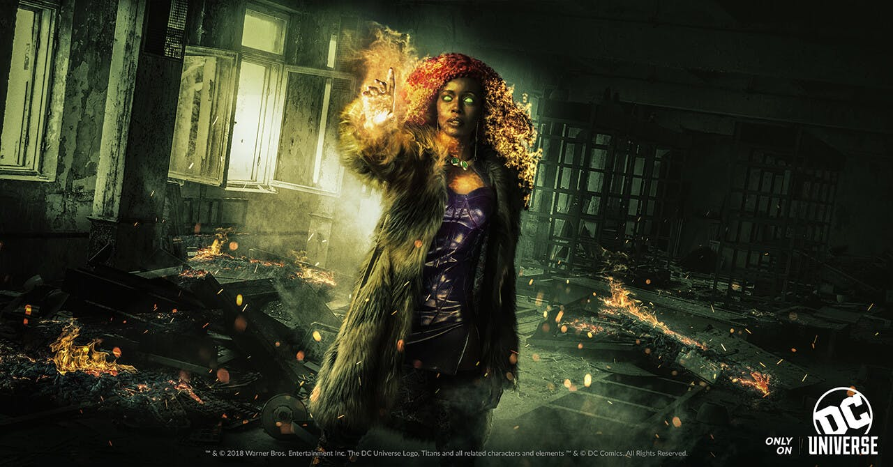კორი ანდერი(starfire) არის DC Comics-ის სუპერგმირი და ერთ-ერთი წამყვანი პერსონაჟი „Teen Titans“-ის ისტორიაში. იგი ცნობილია თავისი წარმოუდგენელი ძალებით, ენერგიის მანიპულაციის უნარით და შთამბეჭდავი პერსონალობით. სტარფაიერი წარმოშობით ტამარანიდანაა, პლანეტიდან, რომელიც მდიდარია კულტურით და ძლიერი მებრძოლებით. მისი ისტორია ხშირად ეხება ბრძოლას თავის ქვეყანაში, სადაც იგი განწირულია საზღვრების და პოლიტიკური წინააღმდეგობის გასწვრივ. იგი იძულებული გახდა დატოვოს თავისი პლანეტა და აღმოჩნდა დედამიწაზე, სადაც მას შემდეგ დაიწყო მებრძოლების და მეგობრების ძებნა. სტარფაიერი არის მეგობრული, ენერგიული და ხალისიანი პერსონაჟი, რომელიც ხშირად გამოხატავს სიყვარულს და სიხარულს. მისი ურთიერთობები „Teen Titans“-თან, განსაკუთრებით რობინთან, გამოირჩევა. მას აქვს უნიკალური შესაძლებლობები, რაც მას გამორჩეულ სუპერგმირად აქცევს. სტარფაიერი გამოჩნდა რამდენიმე სატელევიზიო შოუში, როგორიცაა „Teen Titans“ (2003-2006) და „Teen Titans Go!“, აგრეთვე ხვდება „Titans“-ში, სადაც მისი პერსონაჟი გადაიღო ბრენდა სტინმა. სტარფაიერი წარმოადგენს მეგობრობის, სიყვარულის და დაპირისპირების სიმბოლოს. მისი ისტორიები ასახავს კოსმოსური მხატვრობის სილამაზეს და სირთულეებთან გამკლავების პროცესს.
ფლეში
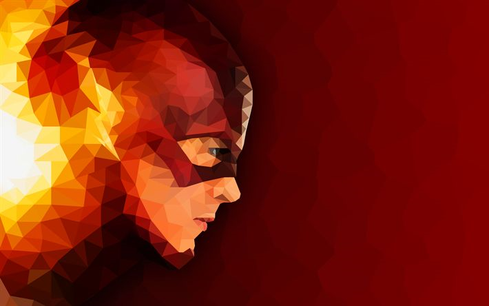ფლეში (The Flash) არის DC Comics-ის სუპერგმირი, რომელიც ცნობილია თავისი სუპერ სისწრაფით. მას აქვს სხვადასხვა ვერსიები, თუმცა ყველაზე ცნობილი პერსონაჟი არის ბერი ალენი (Barry Allen). ფლეში პირველად გამოჩნდა "Flash Comics" 1-ში 1940 წელს. თავდაპირველად, პერსონაჟი შექმნილია ჰარი ლამბერტის (Harry Lampert) და გარდნერ ფოქსის (Gardner Fox) მიერ . ბერი ალენი არის მეცნიერების პოლიციის განყოფილებაში, რომელიც შემთხვევით იქცა სუპერგმირად, როდესაც ერთ-ერთი ექსპერიმენტის დროს მეხი დაეცა და ქიმიური ნივთიერებებით მოიწამლა ფლეში არის სუპერ სისწრაფის მქონე, რაც მას საშუალებას აძლევს სწრაფად გადაადგილდეს, მოახდინოს დროის მანიპულაცია და გაამოძრაოს დანარჩენი საგნები. მას აქვს შესაძლებლობა გადაადგილდეს წარსულსა და მომავალში (ტაიმ ტრაველინგი), შეუძლია გააკეთოს სუპერ ადამიანური სისწრაფით ათასი სხვადასხვა რამ, როგორიცაა ვიბრაციის ტექნიკა და გარემო დანაშაულის გავლენის დათვალიერება. ფლეში ასევე ცნობილია მისი მტრების კომპლექსური და მრავალფეროვანი გალერეით, მათ შორის: რევერს ფლეში(The Reverse-Flash) - თეორიული მტერი, რომელიც თავის წარსულზე დგას. ზუმი(Zoom) - კიდევ ერთი სისწრაფის მქონე, რომელიც ხშირად ცდილობს ფლეშის დამარცხებას. კაპიტანი სიცივე(Captain Cold) - მტერი, რომელიც იყენებს ყინულოვან ტექნოლოგიის. ფლეში გამოჩნდა მრავალ კომიქსში, სატელევიზიო სერიალში და ფილმებში: "Justice League" (2017) და მოახლოვებული "The Flash" (2023). "The Flash" სატელევიზიო სერია, რომელიც 2014 წლიდან გადის, ფართო პოპულარობით სარგებლობს. ფლეში გახდა სუპერგმირობის სიმბოლო, რომელიც ასახავს სისწრაფის, ჭკუის და ენერგიის იდეებს. მისი პერსონაჟი ხშირად გამოჩენილია კომიქსების, თამაშების და ფილმების კულტურაში.
ბეინი
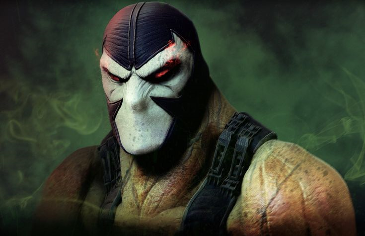ბეინი (Bane) არის DC Comics-ის ერთ-ერთი ყველაზე ცნობილი და მძლავრი ბოროტმოქმედი, რომელიც განსაკუთრებით ცნობილია თავისი ბეტმენის მტრის როლით. ის პირველად გამოჩნდა 1993 წელს კომიქსში "Batman: Vengeance of Bane". ბეინი დაიბადა და გაიზარდა ქალთა ციხეში, სადაც მისი დედა იყო პატიმარი. მისი ბავშვობა იყო სირთულეებით სავსე, რამაც განსაზღვრა მისი პიროვნების განვითარება. ბეინი განვითარდა როგორც ფიზიკურად ძლიერ პიროვნებად, თუმცა მის გონიერებაში დიდწილად იყო აღზრდის მძიმე გავლენა. ბეინი ცნობილია თავისი უზარმაზარი ძალით და გამძლეობით, რასაც ის სუპერ ადამიანებს და სუპერგმირებს დაუპირისპირებს. იგი იყენებს სპეციალურ სუპერსაქმიანობას, რომელსაც უწოდებენ "Venom". ეს საშუალებას აძლევს მას მომატებული ძალა და გამძლეობა, თუმცა ეს ასევე გაწვდილი ხდება დამოკიდებულებაზე. ბეინი არა მხოლოდ ძალაშია, არამედ არის ასევე ძალიან ჭკვიანი და სტრატეგიული მებრძოლი. ბეინი არის ერთ-ერთი ბეტმენის ყველაზე ცნობილი მტერი. მისი ურთიერთობები ასევე აქვს სხვადასხვა პერსონაჟებთან, რომლებიც ხანგრძლივი დროის განმავლობაში იყო როგორც მტერი, ასევე მოკავშირე. მულტიმედია ბეინი გამოჩნდა მრავალ ფილმში, სატელევიზიო სერიალში და კომიქსებში: "Batman & Robin" (1997), სადაც მას ასრულებს ჯორჯ ქლუნი; "The Dark Knight Rises" (2012), სადაც მას ასრულებს ტომ ჰარდი. სხვადასხვა სატელევიზიო სერიებში, მათ შორის "Batman: The Animated Series". კულტურული გავლენა ბეინი გახდა სიმბოლო ძალისა და სიძლიერის, თუმცა მისი პიროვნების სირთულეებისა და ტრაგედიის წყალობით, მისი ხასიათი ასევე მოიცავს გრძნობების სიმძიმეს. ის წარმოადგენს ძალადობისა და ფსიქოლოგიური კომპლექსურობის კრიტიკას.
ზატანა
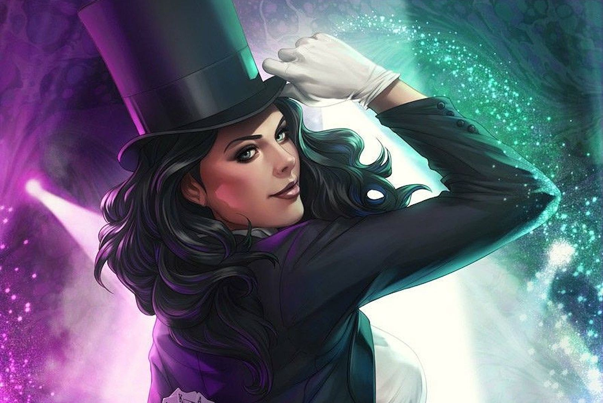ზატანა (Zatanna) არის DC Comics-ის სუპერგმირი და ერთ-ერთი ყველაზე ცნობილი პერსონაჟი კომიქსების სამყაროში. იგი ცნობილია თავისი მაგიური უნარებით და სცენარისტის ნიჭით. მისი პერსონა შესამჩნევია არა მხოლოდ კომიქსებში, არამედ სატელევიზიო შოუებსა და ფილმებში. ზატანა გაიზარდა თავის მამასთან, რომელმაც მას მაგიის საფუძვლები ასწავლა. იგი მოხვდა კომიქსების სამყაროში, როგორც მბრძოლ-მაგი, რომელიც მამამისის საქმეებს აგრძელებს. მისი მიზანია, რომ გამოავლინოს და დაეხმაროს იმ ადამიანებს, რომლებსაც პრობლემების გადაჭრა უნდათ. ზატანა არის ძალზე ღრმა და მრავალმხრივი პერსონაჟი. მისი ამბები ხშირად ეხება სიყვარულს, მეგობრობას და მასთან დაკავშირებულ სირთულეებს. იგი განსაკუთრებით გამოხატავს სურვილს, რომ იყოს ძლიერი, დამოუკიდებელი და ამავე დროს, დაუბრუნდეს თავის მამას. ზატანა გამოჩნდა რამდენიმე სატელევიზიო და ანიმაციურ შოუში, მათ შორის „Justice League Dark“ და „Young Justice“. მისი პერსონაჟი ხშირად აღიქმება როგორც მაგიის სამყაროში ერთ-ერთი წამყვანი სუპერგმირი. ზატანა წარმოადგენს ძალას, რომლითაც ადამიანები და სამყაროს ბედი შეიძლება შეიცვალოს. მისი უნარები და სურვილი, რომ კეთილი იყოს, მას უნიკალური და საინტერესო პერსონაჟად აქცევს DC Comics-ის სამყაროში.
ლუთორი
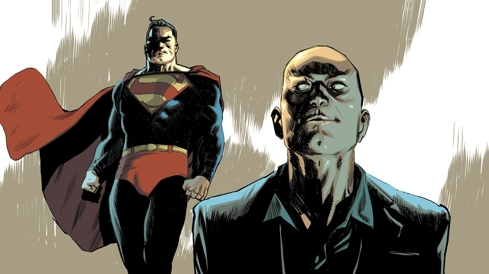ლუთორი (Luthor) არის მნიშვნელოვანი პერსონაჟი სუპერმენის კომიქსების სამყაროში, რომლის შემქმნელები ჯერი სიგელი და ჯოზეფ შუსტერი არიან. ლუთორი, როგორც სუპერმენის ერთ-ერთი მთავარი მეტოქე, ცნობილი ხდება თავისი ინტელექტით, სიმდიდრით და სიმძაფრით. ლექს ლუთორი პირველად გამოჩნდა 1940 წელს "Action Comics" ნომერში 23. ის არის კრიპტონის მტრად დაბადებული ადამიანის სახე, რომელიც ხშირად გამოსახულია როგორც უაზრო მილიარდერი და ტექნოლოგიური გენიოსი. პერსონალური ცხოვრება: ლუთორი გაწვდილი იყო როგორც სუპერმენის მეტოქე, თუმცა, მის პერსონაჟში არსებობს დამატებითი დეტალები, რომლებიც მას უფრო ადამიანის მსგავსი ხდის. იგი ხშირად ჩნდება Gotham City-ს შუქურებში, და მისი ამბიციები მოიცავს ძალაუფლების მოპოვებას. ხასიათი ლუთორი არ არის მხოლოდ ბოროტმოქმედი, არამედ ჭკუამახვილი ადამიანია, რომელსაც აქვს ძლიერი პრინციპები. მისი მოტივები ხშირად მოიცავს მისი მშვენიერი იდეების განხორციელებას, მიუხედავად იმისა, რომ ისინი კანონით მიუღებელია. მისი ურთიერთობა სუპერმენთან არის მუდმივი ბრძოლა, რომელიც მოიცავს ძალაუფლების, იდეების და ფილოსოფიის წინააღმდეგობას. ლუთორი ხშირად ცდილობს დაამარცხოს სუპერმენი როგორც მორალურად, ისე ფიზიკურად. ლუთორი გამოირჩევა თავისი გონებრივი შესაძლებლობებით. ის არის ტექნოლოგიური გენიოსი, რომელიც ქმნის მრავალი ტიპის იარაღსა და ტექნოლოგიას, რათა სუპერმენის წინააღმდეგ ბრძოლაში გამოიყენოს. ლექს ლუთორი არის ერთ-ერთი ყველაზე Iconic და მნიშვნელოვანი პერსონაჟი სუპერმენის სამყაროში. მისი ინტერაქცია და კონფლიქტები სუპერმენთან ქმნის საინტერესო დინამიკას, რაც მის ხასიათს მრავალმხრივად აჩენს.
ქალი-კატა
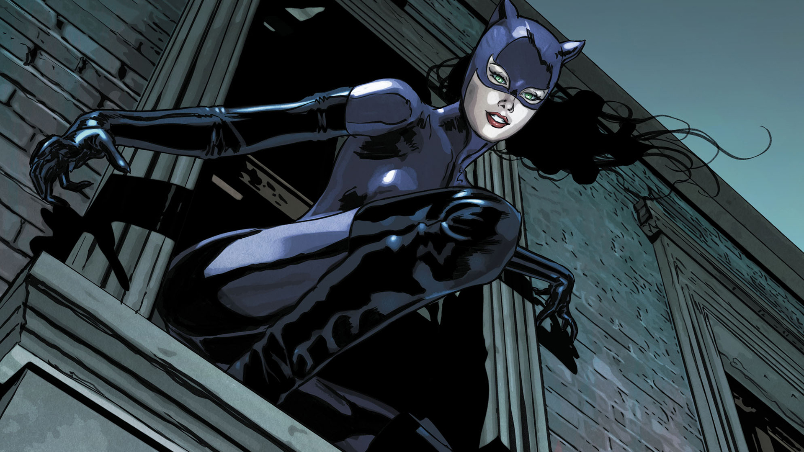სელინა კაილი, იგივე კატვუმანი (Catwoman), არის ერთ-ერთი ყველაზე ცნობილი პერსონაჟი ბეტმენის კომიქსების სამყაროში. მისი ხასიათი ასახავს კომპლექსურობას, რაც მას როგორც ანტიგმირს, ისე ძლიერ ქალად ხდის. სელინა კაილი პირველად გამოჩნდა 1940 წელს "Batman" ნომერში 1. მისი ისტორია ხშირად მოიცავს ღარიბი ფონით გაზრდას, რაც მის ქურდობაზე გავლენას ახდენს. სხვადასხვა ინტერპრეტაციებში იგი გამოსახულია როგორც ბავშვობაში დაზარალებული გოგონა, რომელიც საბოლოოდ ხდება უნიკალური ქურდი. სელინა ცნობილია თავისი ქარიზმით და სექსუალობით. მას აქვს ორი მხარე: ის არის ცქრიალა, მაგრამ შთანთქმული სიბნელით, რაც მის ხასიათს და ურთიერთობებს კიდევ უფრო ართულებს. კატვუმანი არის როგორც ქურდი, ისე რობერტი, რომელსაც აქვს თავისი მორალური კოდექსი. ხშირად ის მოქმედებს Gotham City-ს მაცხოვრებლების დასაცავად, მაგრამ მისი მეთოდები ხშირად არაკონვენციური და კანონსაწინააღმდეგოა. სელინა გამოირჩევა საბრძოლო უნარების გამო. იგი იყენებს თავის გამჭრიახობას, რათა გაუმკლავდეს ურთულეს სიტუაციებს. სელინა კაილი, როგორც კატვუმანი, წარმოადგენს რთულ და მრავალმხრივ პერსონაჟს, რომელიც ასახავს ქალის ძალასა და დამოუკიდებლობას. მისი ისტორია, ურთიერთობები და ბრძოლები ბეტმენის სამყაროში ქმნიან მიმზიდველ და შთამბეჭდავ ხასიათს, რომელიც ყოველთვის ყურადღებას იპყრობს.
ჰარვი დენტი
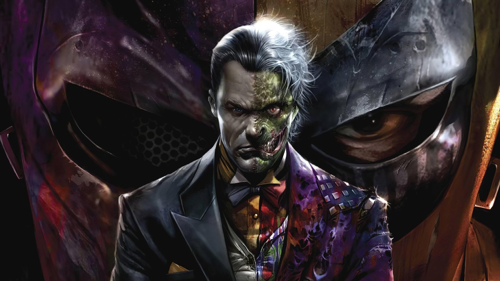ჰარვი დენტი (Harvey Dent) არის ერთ-ერთი ყველაზე ცნობილი და რთული პერსონაჟი ბეტმენის კომიქსების სამყაროში. როგორც Gotham City-ს ადვოკატი, მისი ხასიათი ხშირად ასოცირდება სამართლებრივი სისტემის სიმბოლიკასთან და იდენტობის კრიზისთან. ჰარვი დენტი გამოჩნდა პირველად 1942 წელს "Detective Comics" ნომერში 66. მან მოიპოვა პოპულარობა როგორც Gotham City-ს პროკურორი, რომელსაც ჰქონდა ძლიერი პრინციპები და სამართლებრივი ეთიკა. მისი მიზანი იყო Gotham-ის დანაშაულის წინააღმდეგ ბრძოლა. მისი ცხოვრება თავდაყირა მიდის, როდესაც მასზე ხდება თავდასხმა, რის შედეგადაც მისი სახე იწვება. ეს ტრაგედია ქმნის მის პიროვნულ რღვევას და მას გარდაქმნის Two-Face-ში, ბოროტმოქმედად, რომელიც თავისი მორალური კონტროლის დაკარგვით გამოირჩევა ჰარვი არის ნიჭიერი სტრატეგი და ტაქტიკოსი, რაც მას ეხმარება დანაშაულებრივი გეგმების განხორციელებაში. მისი ადვოკატული გამოცდილება, როგორიცაა მისი მორალური საკითხებისადმი მიდგომა, ხშირად გამოიყენება მტრის წინააღმდეგ. ჰარვი დენტი არის ერთი ყველაზე მნიშვნელოვანი და ტრაგიკული პერსონაჟი ბეტმენის სამყაროში. მისი ისტორია, რომელიც ასახავს ადამიანის ფსიქოლოგიურ კომპლექსურობას, შინაგან კონფლიქტებს და სამართლიანობისთვის ბრძოლის რთულ გზას, ხდის მას საინტერესო და მრავალმხრივ პერსონაჟად.
პინგვინი

პინგვინი (Oswald Cobblepot) არის ერთ-ერთი გამორჩეული ბოროტმოქმედი ბეტმენის კომიქსების სამყაროში. მისი პერსონაჟი პირველად გამოჩნდა 1941 წელს "Detective Comics" ნომერში 58 და იქიდან მოყოლებული, მისი ისტორია და ხასიათი ფართოდ განვითარდა. ოსვალდ კობლპოტი, იგივე პინგვინი, არის მდიდარი ოჯახიდან. თუმცა მისი უნიკალური გარეგნობა (პატარა სიმაღლე, ბრტყელი ცხვირი) ხშირად აწუხებდა ბავშვობაში და საბოლოოდ ეს მას ძალადობრივი, ბოროტმოქმედი ცხოვრებისკენ მიიყვანს. პინგვინი გამოირჩევა მახასიათებლებით, როგორიცაა ინტელექტი და სტრატეგიული აზროვნება. იგი ცნობილი ხდება როგორც საფინანსო გენიოსი და ორგანიზებული დანაშაულის ლიდერი. მას აქვს ფართო კავშირები Gotham City-სქალაქში და ხშირად თამაშობს როგორც კათხის სპონსორი. მიუხედავად იმისა, რომ პინგვინი ბოროტმოქმედია, მას აქვს საკუთარი პრინციპები და ღირებულებები, რაც ზოგჯერ მას დადებითი კუთხით წარმოსახვაში აქცევს. ის კი არ იყენებს მხოლოდ ძალას, არამედ ყოველთვის ცდილობს მოახერხოს სიტუაციის დალაგება ჭკუით. პინგვინი წარმოადგენს მნიშვნელოვან და მრავალმხრივ პერსონაჟს ბეტმენის სამყაროში. მისი რთული პიროვნული ისტორია, უნარები და ურთიერთობები მას იმუნიტეტს ანიჭებს სხვა ბოროტმოქმედებთან შედარებით, რაც თავის მხრივ, უფრო საინტერესო და შემოქმედებით ილუსტრაციას ქმნის Gotham City-ს დანაშაულებრივ სამყაროში.
რევერს ფლეში

Reverse Flash (რევერს ფლეში) არის DC Comics-ის სუპერგმირი და ერთ-ერთი მთავარი მტერი Flash-ის. მისი პირველი გამოჩენა მოხდა 1963 წელს "The Flash" #105-ში, და მას შექმნა გერშონ სელიკოვი და ჯონ ბროუნი. Reverse Flash არის ბოროტმოქმედი, რომელიც ხშირად უკავშირდება სუპერგმირ Flash-ს, განსაკუთრებით ბარი ალენს. მისი ისტორია მჭიდროდაა დაკავშირებული დროის კონტროლისა და მეტამფიზიკური მოვლენების თემებთან. Reverse Flash-ის როლი არ არის მხოლოდ Flash-ის მტრის როლში; ის ემოციურად და სტრატეგიულად უკავშირდება მის ისტორიას. მისი მიზნები ხშირად ეხება სიძულვილს და შურისძიებას Flash-ის მიმართ, რაც მას უფრო საინტერესო და რთულ პერსონაჟად აქცევს. Reverse Flash გამოჩნდა მრავალ კომიქსში, ანიმაციურ სერიებში და ფილმებში. განსაკუთრებით პოპულარულია მისი როლი "The Flash" ტელესერიაში, სადაც მას სხვადასხვა მსახიობები ასრულებენ. Reverse Flash არის ერთ-ერთი ყველაზე ცნობილი და შთამბეჭდავი DC Comics-ის პერსონაჟი, რომლის ამბები და კონფლიქტები Flash-ის სამყაროსთვის მნიშვნელოვანი და საინტერესოა. მისი კომპლექსური ისტორია და ურთიერთობა Flash-თან ქმნის დაუვიწყარ კონფლიქტს და ხელახლა აღმოჩენას.
დეათსროუკი
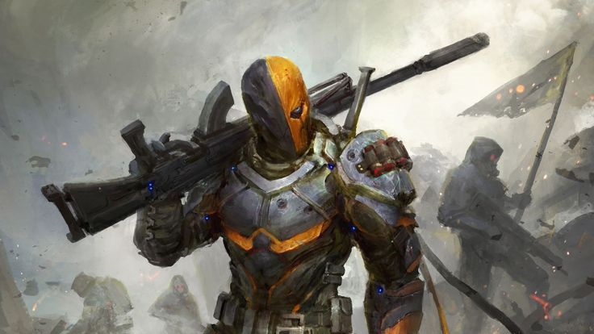Deathstroke (დეს სტროუკი) არის DC Comics-ის ერთ-ერთი ყველაზე ცნობილი ანტაგონისტი და მებრძოლი, რომელმაც პირველად გამოჩნდა 1980 წელს "The New Teen Titans" #2-ში, მისი შემქმნელები არიან მარვინ უინტერსი და ნიკო ფრენკო. სლეიდი ყოფილი სპეცრაზმელი და საბრძოლო ექსპერტია, რომელმაც მიიღო სამხედრო ექსპერიმენტები, რაც მას განსაკუთრებული სისწრაფის, ძალის და შესაძლებლობების მატებას იწვევს. მისი ტრანსფორმაცია მოიცავს როგორც ფიზიკურ, ასევე ინტელექტუალურ შესაძლებლობებს, რაც მას საკმაოდ საშიში მტრად აქცევს. Deathstroke ხშირად მოიხსენიება როგორც ყველაზე სერიოზული მოწინააღმდეგე Teen Titans-ისა და სხვა DC პერსონაჟების, მათ შორის Batman-ის. მისი სახელი ხშირად დაკავშირებულია შურისძიებას და არამოწონილ ქმედებებს. Deathstroke არის DC Comics-ის ერთ-ერთი ყველაზე პოპულარული და ხანგრძლივი შემოქმედებითი პერსონაჟი, რომელსაც ბევრი გულშემატკივარი ჰყავს. მისი რთული პიროვნების და ანტაგონისტის როლის გამო, იგი ხშირად არის განხილული როგორც კინოსურათებში და კომიქსებში. Deathstroke გამოჩნდა მრავალ კომიქსში, ანიმაციურ სერიებში და ვიდეო თამაშებში. განსაკუთრებით საინტერესოა მისი როლი "Teen Titans" ანიმაციურ სერიებში და ფილმში "Teen Titans Go! To the Movies".
მწვანე ნათურა

მწვანე ნათურა (Green Lantern) არის DC Comics-ის სუპერგმირი, რომელიც პირველად გამოჩნდა 1940 წელს "All-American Comics" #16-ში. პერსონაჟის შექმნა შარლოტ უოლტერსისა და მორტ ვეიზინგერის მიერ მოხდა. მწვანე ნათურა წარმოადგენს პლანეტის დაცვას და უსაფრთხოებას, რომელიც მუშაობს მულტიპლიკაციური ჯგუფის, სახელწოდებით Green Lantern Corps-ის, ნაწილად. მწვანე ნათურის ძალები წარმოქმნის მწვანე ნათურის ბეჭედი, რომელიც მფლობელს (მწვანე ნათურის გამტარელს) შეუძლიათ ენერგიის შექმნა და წარმოება. ყოველი მწვანე ნათურა უნდა იყოს მამაცი და ეთიკურ პიროვნებად, რადგან მათი ძალები მყარად უკავშირდება მათ მიერ განცდილ ემოციებს. მწვანე ნათურა გამოჩნდა უამრავ კომიქსში, ანიმაციურ სერიებში, და ფილმებში. განსაკუთრებით მნიშვნელოვანი იყო 2011 წლის ფილმი "Green Lantern", სადაც ჰალ ჯორდანის როლში რაინ რაინოლდსი იყო. მწვანე ნათურა გახდა DC Comics-ის ერთ-ერთი ყველაზე ikonური პერსონაჟი, რომელსაც აქვს დიდი გავლენა კოლექციონირების და ფანდომის კულტურაზე.
კიბორგი
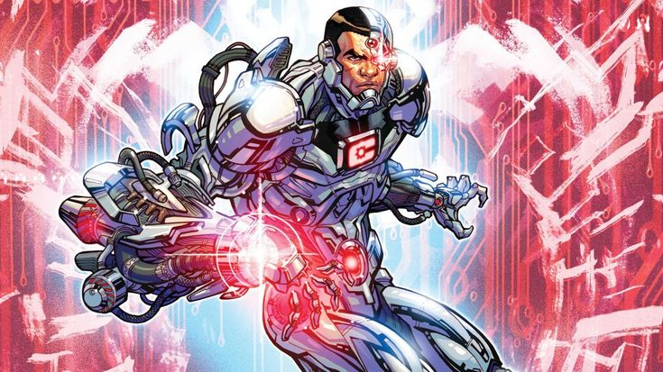Cyborg არის DC Comics-ის სუპერგმირი, რომლის პერსონაჟი პირველად გამოჩნდა 1980 წელს "DC Comics Presents" #26-ში, მისი შემქმნელები არიან მარვინ უინტერსი და ჯორჯ პერეზი. Cyborg-ს აქვს მრავალი ტექნოლოგიური კომპონენტი, რომელიც მას მძლავრ უნარებს აძლევს. იგი შეუძლია გაუმკლავდეს ნებისმიერი კომპიუტერს და სისტემას. მისი სხეული აღჭურვილია დაცვის სისტემებით, რაც მას დამწვრობისა და მძიმე დაზიანების წინააღმდეგ იცავს. Cyborg არის ექსპერტი საბრძოლო ხელოვნებაში, რამაც მას შესაძლებლობა მისცა მებრძოლების წინაშე დადგეს. Cyborg იყო პოპულარული "Teen Titans" ანიმაციურ სერიებში, სადაც მისი პერსონაჟი განვითარდა და ფართო აუდიტორიის მოწონება მოიპოვა. ის ასევე გამოჩნდა "Justice League" ფილმებში, სადაც მისი როლი გაცილებით მნიშვნელოვნად იყო გაფართოებული.
დარკ სეიდ
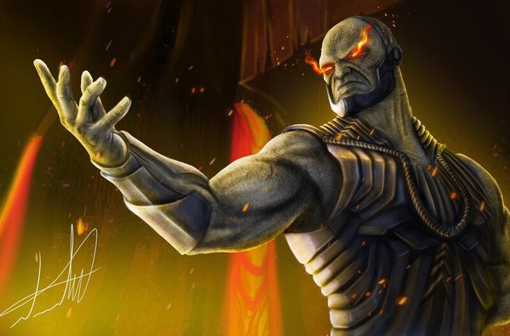Darkseid არის DC Comics-ის ერთ-ერთი ყველაზე ცნობილი ანტაგონისტი და ერთ-ერთი ყველაზე ძლიერი სუპერგმირი. ის პირველად გამოჩნდა 1970 წელს "Forever People" #1-ში, რომლის ავტორი იყო ჯეკ კირბი. Darkseid შეუძლია სხეულიდან ენერგიის გამოსხივება და შეუძლია გააკონტროლოს ადამიანური ემოციები, რაც მას დიდ ძალას აძლევს.ეს არის მისი ერთ-ერთი ყველაზე ძლიერი იარაღი, რომელიც შეუძლია მტრის განადგურება ან მათი მართვა. Darkseid არის არამარტო ძლიერი, არამედ შესანიშნავი მებრძოლი, რომელსაც აქვს უდიდესი საბრძოლო გამოცდილება. Darkseid გახდა DC Comics-ის სამყაროს ერთ-ერთი სიმბოლო, რომელიც ხშირად გამოიყენება როგორც მაღალი რანგის ანტაგონისტი და ზოგადად მტერი. მისი იდეები ძალისა, კონტროლის და პიროვნული თავისუფლების წინააღმდეგობა ხშირად ასახულია კომიქსებში, სერიებში და ფილმებში.